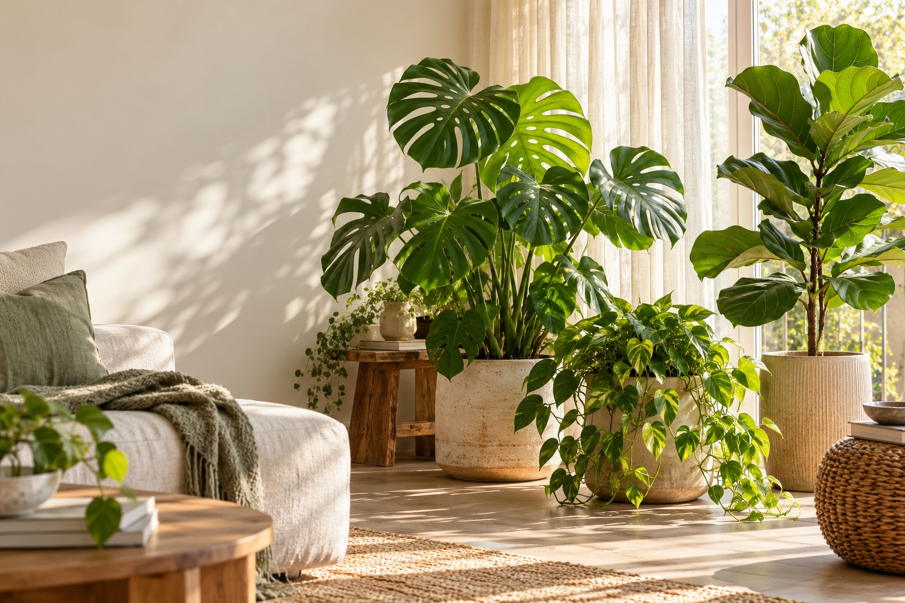
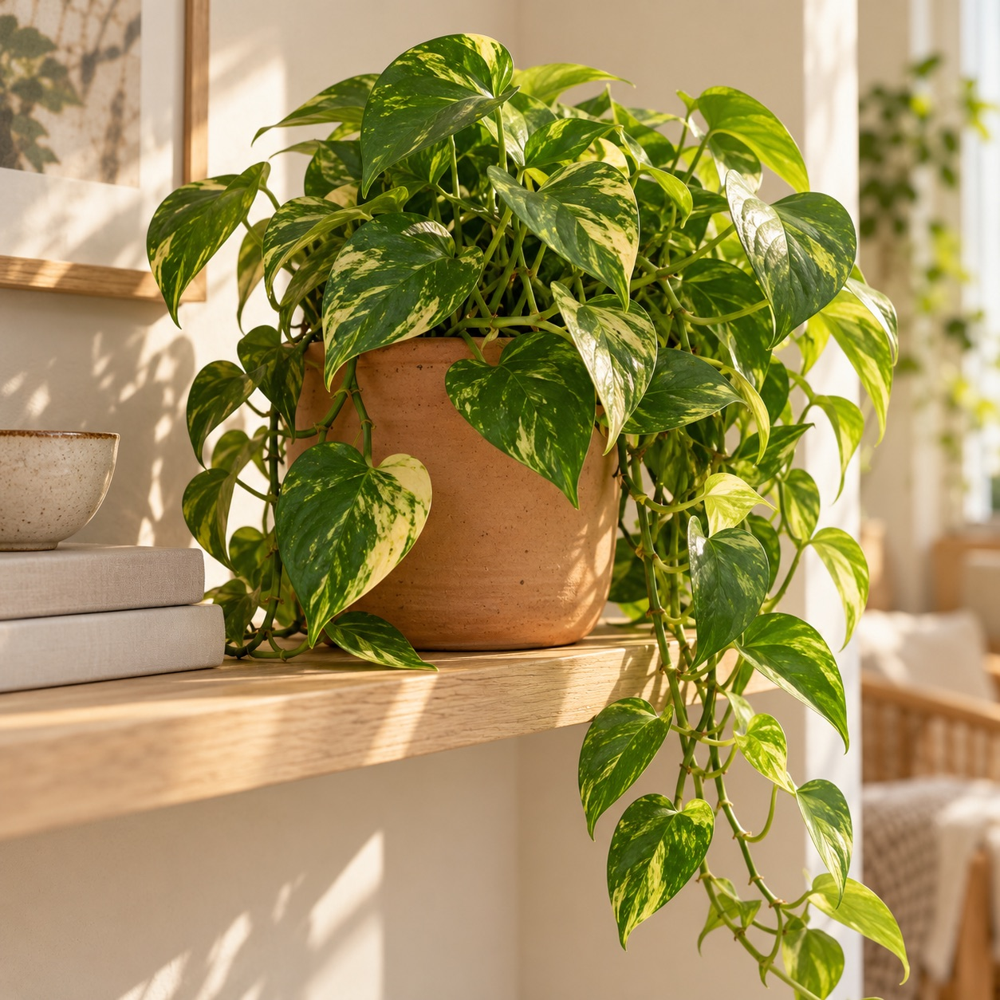

01 / DISCOVER
Get to know a new plant
Take a photo to identify a plant, then keep its name, details, and a picture together in your collection.
Plantling makes it easier to learn what your plants need, keep a gentle care routine, and enjoy every new leaf along the way.

Whether your first plant is settling in or your windowsill has become a jungle, Plantling helps keep the useful details close.
Take a photo to identify a plant, then keep its name, details, and a picture together in your collection.
Save photos and context about a plant concern, and explore AI-assisted guidance to help you decide what to check next.
Set reminders for watering and other care, choose a rhythm that suits your home, and keep a simple care history.
Bring photos, notes, reminders, and care moments into a personal plant space you can revisit as things grow.
Chat about plant care, ask follow-up questions, and keep the conversation near the plant you’re caring for.
From bold, sculptural leaves to a soft trail of green, notice what makes each plant yours. Save a photo, add a name, and make a little corner for its story.
Have a plant question? We’re here


Plantling is designed to fit around real life. Start with what you know, and add more as you learn.
Identify a new leafy friend or create a plant profile with the name and details you already know.
Keep notes about its spot, add a care reminder, and record the little things you notice.
Use a photo, a care log, or a question to make your next plant-care moment a little easier.
Plantling brings your collection, reminders, snapshots, and care notes into one welcoming space—so you can spend less time wondering what you forgot and more time noticing what’s growing.
Here’s to learning as you go and enjoying the plants that make your place feel like home.
We’d love to hear from you